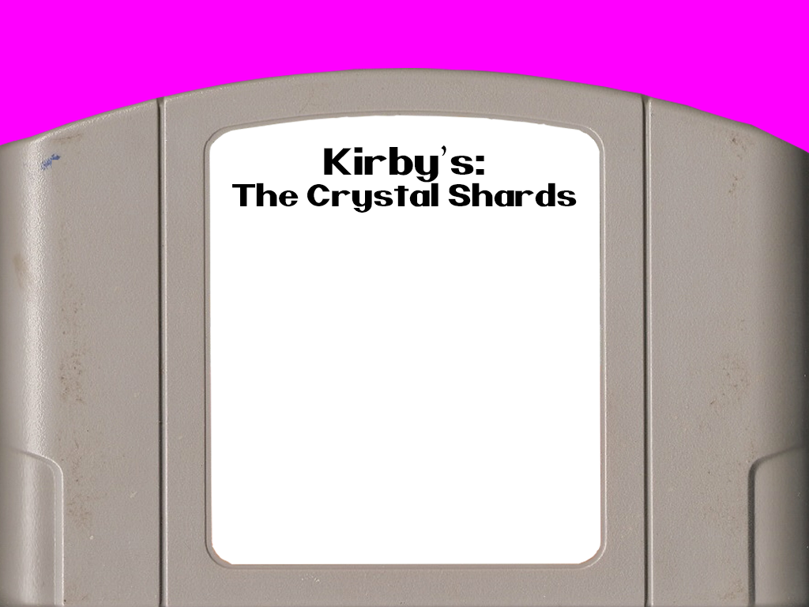
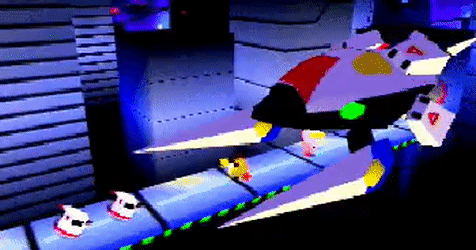

 
Kirby 64: The Crystal Shards is a side-scrolling platform game in the Kirby series developed by HAL Laboratory and published by Nintendo for the Nintendo 64 home video game console. It is the sequel to Kirby's Dream Land 3.